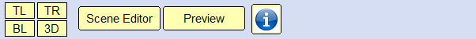

TMH SceneBuilder
W.T.Flanigan
M.Habib H.C.Flanigan
TMH Software
|
|
Top Bar ( Map Editor )
|
|
| |

TL
Selecting
this option makes you able to only focus on the Top Left putting your
screen into full window mode giving you more clarity and screen size to
work with.
TR
Selecting
this option makes you able to only focus on the Top Right putting your
screen into full window mode giving you more clarity and
screen size to work with.
BL
Selecting this option makes you able to only focus on the Bottom Left
putting your screen into full window mode giving you more clarity and
screen size to work with.
3D
Selecting this option makes you able to only focus on the 3D Panel
putting your screen into full window mode giving you more clarity and
screen size to work with.
Scene
Editor
Scene Editor button transfers your 3D physical world to Edit mode where
you could control physics, build more objects, install sound tracks
Etc, and gives you the ability to test your work by giving "1st Person"
perspective camera view and "Free Camera"
Map Editor
By selecting this you set yourself back into the main map view where you can see the four 3D panels
Preview
Preview
button puts you into the world you have built, 1st person perspective
of the character or the objective you have been building so you can
test it, Selecting it you will get 3 Options "Level Start" which starts
the program, "Player Position" which lets you control the character
you've created and "Return" which puts you back into the 3D space where
you could see all the physical objectives that has been made.
Additional Tips:
As soon as you press Preview and select Level Start you you will
be able to move freely inside the wolrd you have created by using
"WASD" to control the directions as well as moving your Mouse freely to
control the camera directions
|
|
|
|
Copyright
© 2025. TMH
Software.
W.T.Flanigan
M.Habib H.C.Flanigan |
|
|